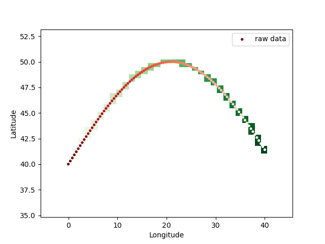

oceanpack package
Submodules
oceanpack.helpers module
- oceanpack.helpers.centered_bins(x)[source]
Create centered bin boundaries from a given array with the values of the array as centers.
Example
>>> x = np.arange(-3, 4) >>> x array([-3, -2, -1, 0, 1, 2, 3]) >>> centered_bins(x) array([-3.5, -2.5, -1.5, -0.5, 0.5, 1.5, 2.5, 3.5])
- oceanpack.helpers.check_input_for_duplicates(func)[source]
A decorator that checks a list of file paths (the first and only argument of the wrapped function) for duplicates. For example, when you call the function
oceanpack.io_routines.read_oceanpack()with a list of many files, the decorator checks the input for duplicates before the read-in routine actually processes the files. The decorator makes use of theos.stat()signatures (file type, size, and modification time) to compare files pair-wise.Detected duplicates are dropped from the list such that the function can deal with the cleaned-up list.
- oceanpack.helpers.cond2sal(C, T, p)[source]
Compute salinity from conductivity, according to Lewis and Perkin [1981].
Example
>>> cond2sal(C=52, T=25, p=1013) 34.20810771080768
- oceanpack.helpers.decimal_degrees(x)[source]
Convert coordinates from ‘ddmm.mmmm’ format into ‘dd.dddd’.
Example
>>> x = (12.0, 45.5) >>> decimal_degrees(x) array([0.2 , 0.75833333])
- oceanpack.helpers.fugacity(pCO2, p_equ, SST, xCO2=None)[source]
Calculate the fugacity of CO2. Can be done either before or after a
temperature correction(). The formulas follow Dickson et al. [2007], mainly SOP 5, Chapter 8. “Calculation and expression of results”\[(fCO_2)^\text{wet}_\text{SST} = (pCO_2)^\text{wet}_\text{SST} \cdot \exp{\Big(p_\text{equ}\cdot\frac{\left[ B(CO_2,SST) + 2\,\left(1-(xCO_2)^\text{wet}_{SST}\right)^2 \, \delta(CO_2,SST)\right]}{R\cdot SST}\Big)}\]where \(SST\) is the sea surface temperature in K, \(R\) the gas constant and \(B(CO_2,SST)\) and \(\delta(CO_2,SST)\) are the virial coefficients for \(CO_2\) (both in \(\text{cm}^3\,\text{mol}^{-1}\)), which are given as
\[B(CO_2,T) = -1636.75 + 12.0408\,T - 0.0327957\,T^2 + 0.0000316528\,T^3\]and
\[\delta(CO_2,T) = 57.7 - 0.188\,T\]- Parameters:
pCO2 (float or pd.Series) – The partial pressure of CO2 (in µatm). Make sure you have converted xCO2 concentration (mole fraction in ppm) into partial pressure (in µatm).
p_equ (float or pd.Series) – The measured pressure (in hPa, Pa or atm) at the equilibrator (hint: you might want to smoothen your time series)
SST (float or pd.Series) – The in-situ measurement temperature (in °C or Kelvin)
xCO2 (float or pd.Series (optional)) – CO2 concentration (mole fraction in ppm). If given, the d_CO2 virial coefficient in the numerator in the exponential expression is multiplied by (1 - xCO2*1e-6). Else, this term is 1.
- oceanpack.helpers.grid_dataframe(points, vals, xi, export_grid=False)[source]
Bin the values with points coordinates by the given target coordinates xi and put the average of each bin onto the target grid.
- Parameters:
Example
>>> df = pd.DataFrame({'lon': np.linspace(0, 40, 100), >>> 'lat': np.sin(np.linspace(0, 3, 100))*10 + 40, >>> 'data': np.linspace(240,200,100)}) >>> xi = np.linspace(-5, 45, 40) >>> yi = np.linspace(35, 53, 50) >>> gridded = grid_dataframe((df.lon, df.lat), df.data, (xi, yi)) >>> plt.pcolormesh(xi, yi, gridded, shading='auto', cmap='Greens_r') >>> plt.scatter(df.lon, df.lat, c=df.data, marker='.', lw=.75, cmap='Reds', label='raw data') >>> plt.xlabel('Longitude') >>> plt.ylabel('Latitude') >>> plt.legend() >>> plt.show()

{kind=link}
- oceanpack.helpers.nearest(items: list, pivot: float) float[source]
Find the element inside items that is closest to the pivot element.
Examples
>>> nearest(np.array([2,4,5,7,9,10]), 4.6) 5
- oceanpack.helpers.order_of_magnitude(x)[source]
Determine the order of magnitude of the numeric input (int, float,
numpy.array()orpandas.Series()).Examples
>>> order_of_magnitude(11) array(1.) >>> order_of_magnitude(234) array(2.) >>> order_of_magnitude(1) array(0.) >>> order_of_magnitude(.15) array(-1.) >>> order_of_magnitude(np.array([24.13, 254.2])) array([1., 2.]) >>> order_of_magnitude(pd.Series([24.13, 254.2])) array([1., 2.])
- oceanpack.helpers.ppm2uatm(xCO2, p_equ, input='wet', T=None, S=None)[source]
Convert mole fraction concentration (in ppm) into partial pressure (in µatm) following Dickson et al. [2007]
\[pCO_2 = xCO_2 \cdot p_\text{equ}\]- Parameters:
xCO2 (float or pd.Series) – The measured CO2 concentration (in ppm)
p_equ (float or pd.Series) – The measured pressure (in hPa, Pa or atm) at the equilibrator (hint: you might want to smoothen your time series)
input (str [default: "wet"]) – Either “wet” or “dry”, specifying the type of air, in which the concentration is measured. If the CO2 concentration is measured in dry air, one must correct for the water vapor pressure. In this case, make sure to also provide T (temperature in Kelvin) and S (salinity in PSU) as arguments.
T (float or pd.Series [default: None]) – Temperature in Kelvin (needs to be provided if xCO2 is measured in dry air)
S (float or pd.Series [default: None]) – Salinity in PSU (needs to be provided if xCO2 is measured in dry air)
- oceanpack.helpers.pressure2atm(p)[source]
Convert pressure given in hPa, Pa or atm into atm.
Examples
>>> pressure2atm(1013.25) 1.0 >>> pressure2atm(101325) 1.0 >>> pressure2atm(2) 2 >>> pressure2atm(pd.Series([1013.25, 1024.0])) 0 1.000000 1 1.010609 dtype: float64
- oceanpack.helpers.pressure2mbar(p)[source]
Convert pressure given in hPa, Pa or atm into mbar (or hPa).
Examples
>>> pressure2mbar(1013) 1013 >>> pressure2mbar(101300) 1013.0 >>> pressure2mbar(1.0) 1013.25 >>> pressure2mbar(pd.Series([1.013, 2.034])) 0 1026.42225 1 2060.95050 dtype: float64
- oceanpack.helpers.set_nonoperating_to_nan(data, col='CO2', shift='30min', status_var='ANA_state')[source]
Set all values from each period, which is ranging from the begin of a certain phase (indicated by the ANA_state flag) to the end of the phase, plus a given shift to NaN.
- oceanpack.helpers.temperature2C(T)[source]
Convert temperatures given in Kelvin into °C. If T is a
pandas.Series()object, only values less than 200 are converted. All others are expected to be already in °C.Examples
>>> temperature2C(283.15) 10.0
- oceanpack.helpers.temperature2K(T)[source]
Convert temperatures given in °C into Kelvin. If T is a
pandas.Series()object, only values larger than 200 are converted. All others are expected to be already in Kelvin.Examples
>>> temperature2K(10) 283.15
- oceanpack.helpers.temperature_correction(CO2, T_out=None, T_in=None, method='Takahashi2009', **kwargs)[source]
Apply a temperature correction. This might be necessary when the temperatures at the water intake (often outside the ship) and at the OceanPack CTD differ. The correction used here follows Takahashi et al. [2009]:
\[{(xCO_2)}_{SST} = {(xCO_2)}_{T_\text{equ}} \cdot \exp{\Big(0.0433\cdot(SST - T_\text{equ}) - 4.35\times 10^{-5}\cdot(SST^2 - T_\text{equ}^2)\Big)}\]for correcting the temperature at the equilibrator \(T_ ext{equ}\) to the SST.
CO2 can be one out of [xCO2 (mole fraction), pCO2 (partial pressure), fCO2 (fugacity)].
- Parameters:
CO2 (float or pd.Series) – The CO2 variable, which shall be corrected for temperature differences. Can be one out of the following: - xCO2 (mole fraction in ppm) - pCO2 (partial pressure in hPa, Pa, atm or µatm) - fCO2 (fugacity in hPa, Pa, atm or µatm)
T_out (float or pd.Series) – The temperature towards which the data shall be corrected. Typically, the in-situ temperature (°C or K), at which the water was sampled.
T_in (float or pd.Series) – The temperature from which the data shall be corrected. Typically, the temperature (°C or K) at the equilibrator, at which the water was measured.
method (str) – Either “Takahashi2009” or “Takahashi1993”, describing the method of the respectively published paper by Takahashi et al.